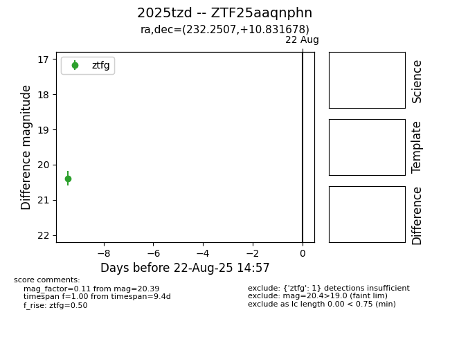

Target 2025tzd at 2025-08-21 11:20, see:
FINK: fink-portal.org/ZTF25aaqnphn
Lasair: lasair-ztf.lsst.ac.uk/objects/ZTF25aaqnphn
ALeRCE: alerce.online/object/ZTF25aaqnphn
TNS: wis-tns.org/object/2025tzd
YSE: ziggy.ucolick.org/yse/transient_detail/2025tzd
alt names
ZTF25aaqnphn (ztf,alerce)
2025tzd (tns,yse)
coordinates:
equatorial (ra, dec) = (232.2507,+10.83168)
galactic (l, b) = (16.9201,+49.57420)
photometry
last ztfg=20.39
1 ztfg detections
